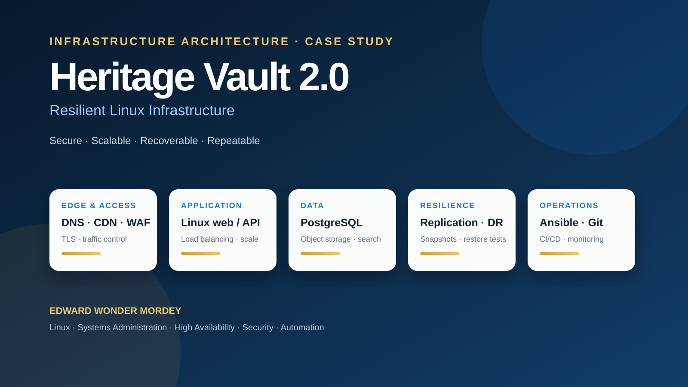

Heritage Vault 2.0
A conceptual Linux-centered infrastructure architecture for a global genealogy platform that must stay available under heavy demand, protect sensitive records, scale storage and search, and recover predictably from failure.

Design for dependability.
The scenario required an architecture that could support global users, preserve very large collections of genealogical records and images, protect sensitive data, and deliver fast searches across billions of records. I treated availability, security, storage, performance, and operations as one connected design problem rather than isolated technical choices.
A layered Linux service model.
Scale, secure, and recover.
High-volume access
Redundant Linux application nodes sit behind load balancers, while CDN caching reduces repeated origin traffic. Stateless application design and queued background jobs make horizontal scaling safer and protect interactive traffic during expensive processing.
Security and privacy
The design starts with identity: MFA, individual administrator accounts, RBAC, sudo-based privilege control, hardened SSH, encrypted connections, network segmentation, centralized logging, and isolated recovery copies.
Storage and redundancy
Structured records use a highly available relational database; large images and documents use scalable object or distributed storage; search indexes remain rebuildable. RAID supports disk availability but does not replace backups, so the design also uses replication, snapshots, isolated/off-site recovery copies, and restore testing.
Performance
Database indexes, a specialized search tier, caching, read replicas, partitioning, and load testing address search performance at large scale instead of relying only on bigger servers.
Make change repeatable.
I proposed treating infrastructure and configuration as code. Infrastructure definitions, Ansible playbooks, shell scripts, Python tooling, and templates are versioned in Git. A CI/CD process validates changes before staged deployment, with rolling or blue-green releases used to reduce downtime and support rollback.
The implementation roadmap moves from requirements and recovery targets to an automated foundation, staging, controlled migration, and production optimization. Success is measured through tested failover, restoration within RTO, replication within RPO, acceptable search latency, controlled privileged access, logging coverage, and use of the approved automation path.
Systems thinking with business context.
- Linux infrastructure architecture and high-availability planning
- Security design using least privilege, MFA, encryption, segmentation, and centralized auditability
- Database replication, scalable storage, backup strategy, and disaster-recovery planning
- Performance engineering through indexing, caching, read replicas, partitioning, and load testing
- Configuration management and deployment automation with Ansible, Git, shell, Python, and CI/CD
- Technical communication that connects implementation choices to reliability, risk, and long-term operations
Academic submission details, peer-review administration, and classroom-specific material have been intentionally removed from this portfolio edition so the focus remains on the technical work and professional reasoning.